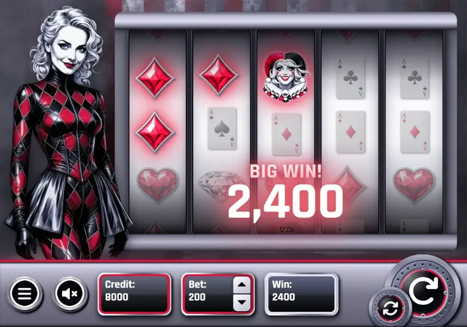
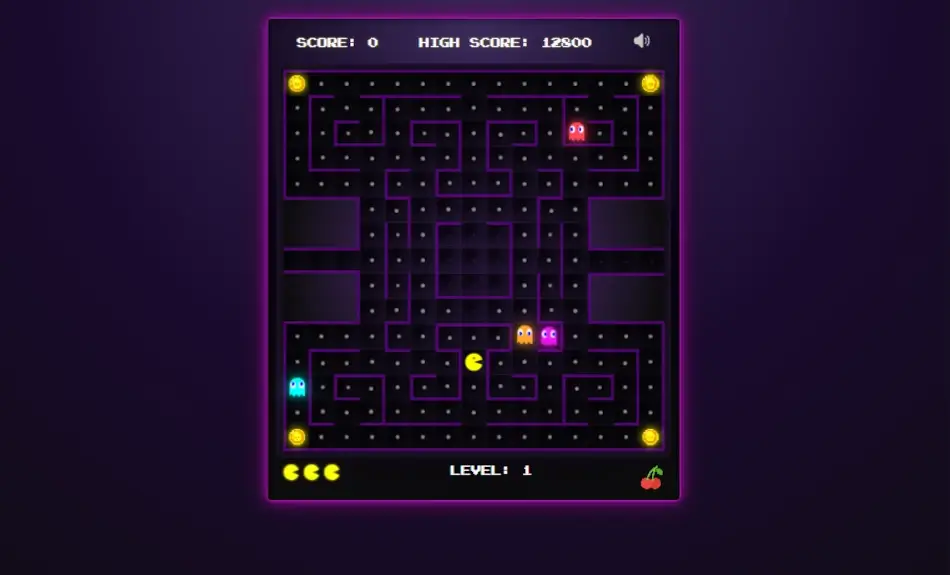
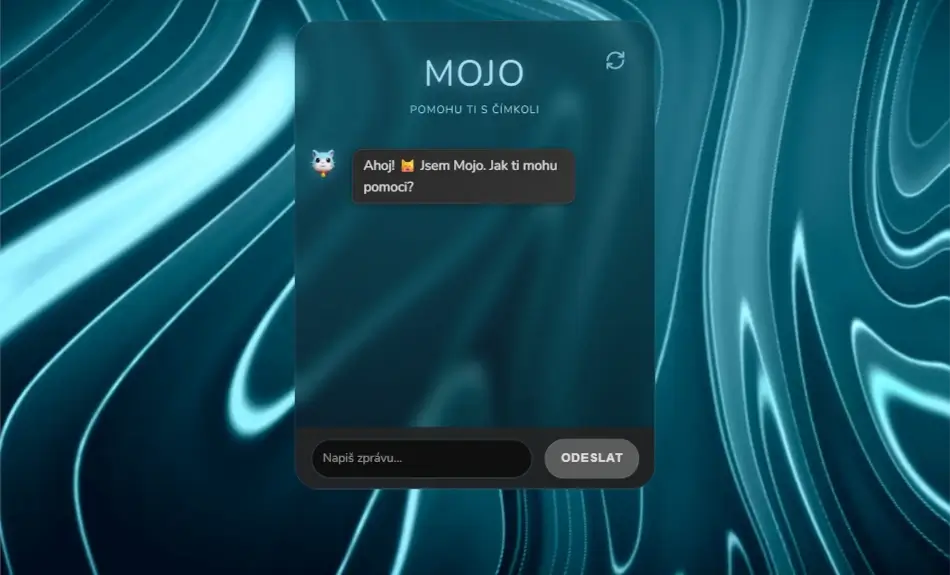
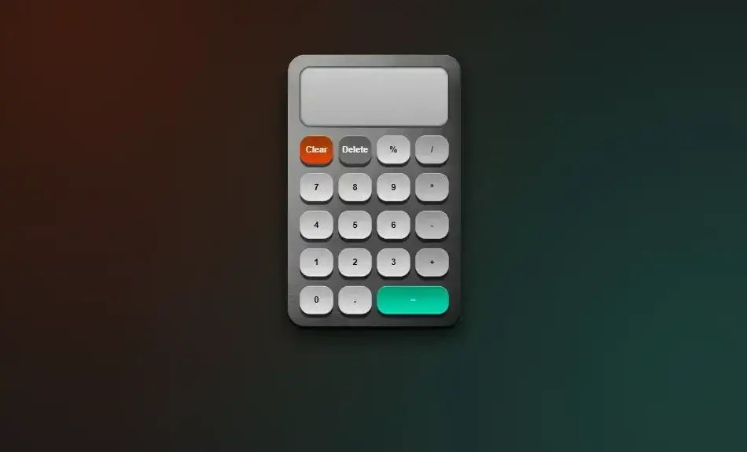
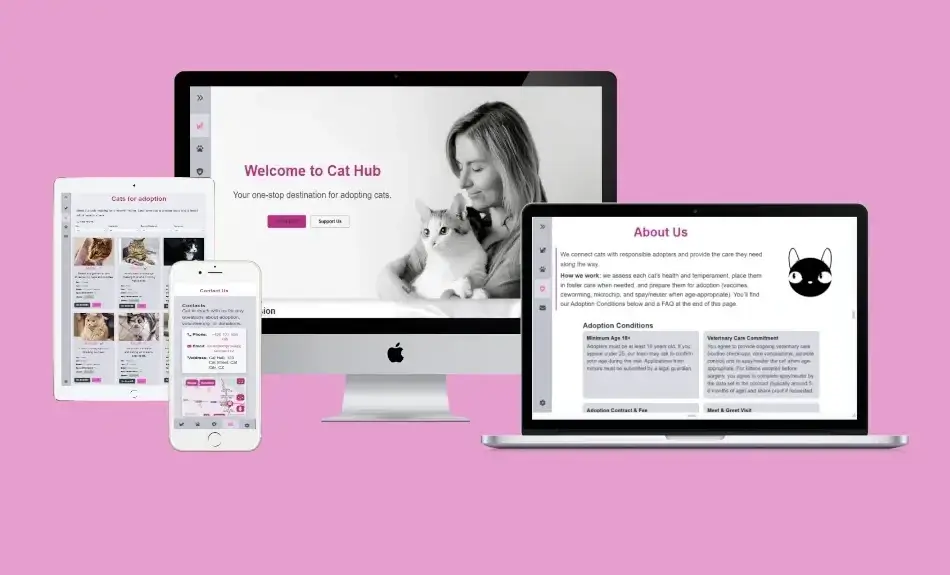

Asi nikdy by mě nenapadlo, že z jednoho nápadu vznikne projekt, na kterém budu pracovat měsíce.
Začalo to jednou aplikací. Pak přibyla druhá, třetí… a v jednu chvíli mi došlo, že už vlastně nevytvářím jednotlivé programy, ale celé Windows XP.
To, co mě na projektu baví nejvíc, nejsou ani tak samotné aplikace. Jsou to všechny ty drobnosti okolo. Jak se otevírají dialogová okna. Jak reagují tlačítka. Jak se chovají scrollbary. Jak spolu jednotlivé programy komunikují. Právě podobné detaily člověk při běžném používání skoro nevnímá, ale dohromady vytvářejí pocit, že opravdu sedí u starých XPček.
Postupně tak přibýval Internet Explorer, Průzkumník, Malování, WordPad, Poznámkový blok, Příkazový řádek, Windows Media Player, klasické hry, Ovládací panely, Microsoft Plus! i další systémové součásti. Dnes už jednotlivé aplikace netvoří samostatné ukázky, ale fungují jako propojený desktop.
Celý projekt vytvářím v Reactu a TypeScriptu bez použití hotových UI knihoven. Většina práce přitom není jen o vzhledu. Často jde o hledání toho, jak se původní Windows XP skutečně chovaly, a následné přenesení stejné logiky do webového prostředí.
Projekt stále rozšiřuji a pořád nacházím další drobnosti, které stojí za to doplnit. Čím déle na něm pracuji, tím víc obdivuji, kolik promyšlených detailů se skrývalo i v částech systému, které většina lidí považovala za úplnou samozřejmost.
Vlastní slotová hra od nápadu až po ověřený herní model
Pustila jsem se do další výzvy a tentokrát jsem si vybrala něco, co mě dlouho lákalo. Předělala jsem svůj cca rok a půl starý Figma návrh na reálnou hru.
Harlequin’s Fortune je plně funkční prototyp slotové hry v realistickém retro Harlequin stylu.
Vytvořila jsem návrh designu, uživatelské rozhraní, herní logiku, animace i zvuky tak, aby hra působila plynule, přehledně a dobře se ovládala na různých zařízeních.
Herní model jsem nastavila pomocí vah symbolů a výherních tabulek a pak jsem ho ověřila pomocí Monte Carlo simulace na milionu herních kol.
Výsledné RTP vyšlo 95,3 % a chování hry je stabilní napříč různými sázkami.
Součástí projektu je loading screen s preloadem klíčových prvků, responzivní a přístupné rozhraní včetně ARIA atributů,
menu s pravidly hry a ukládání stavu pomocí Local Storage. Celá hra běží přímo v prohlížeči, bez instalace.
Projekt slouží jako portfolio demo bez reálných peněz. Pokud vás zajímá technické pozadí hry, testování RTP nebo UX rozhodnutí,
připravila jsem podrobnou
case study
(otevře se v novém okně)
.

Escape room
Pustila jsem se do nové výzvy – vytvořit vlastní únikovou hru.
The Morning After
je interaktivní webová hra, kde se probouzíte v podivné místnosti, aniž byste si pamatovali, jak jste se tam ocitli. Vaším cílem je jediné. dostat se co nejrychleji ven. Prozkoumáváte předměty v místnosti, řešíte hádanky a pomalu odhalujete skrytou pravdu.
Hra je postavená v Reactu s důrazem na plynulou 3D navigaci a atmosférický zážitek. Žádné instalace, funguje přímo v prohlížeči.
Před časem jsem doma objevila starou rozbitou herní konzoli. Nedalo mi to a rozhodla jsem se, že hru vytvořím znovu. S pár drobnými vylepšeními, samozřejmě. 😉
Původní hra se jmenuje podle stejnojmenného ruského seriálu Jen počkej (v originále „Nu pogodi“) a byla vyrobená v roce 1984.
Pokud chcete zažít trochu nostalgie s vlkem chytajícím vajíčka, můžete si zkusit
zahrát
(otevře se v novém okně)
.
Nově můžete hrát i na mobilu.
Cesta k programování vedla přes marketing a focení, kde jsem získala cit pro design a SEO. Když jsem začala pracovat v IT firmě, bylo rozhodnuto – naučím se kódovat pořádně. Pustila jsem se do HTML a CSS s pomocí tutoriálů od Davida Šetka a zdrojů jako
(otevře se v novém okně)Jak psát web
.
Co jsem se naučila
Postupně jsem zvládla strukturovat komplexní weby pomocí HTML5 a stylovat je pomocí moderního CSS včetně Grid a Flexbox. Přidala jsem interaktivitu pomocí JavaScriptu – burger menu, cookies lištu, FAQ s accordion efektem. Později jsem se pustila do Reactu a vytvořila interaktivní projekty jako escape room hru.
Každý web optimalizuji pro vyhledávače – správné meta tagy, alt texty u obrázků, sémantické HTML. Přidávám Open Graph tagy a JSON-LD pro lepší sdílení na sociálních sítích. Dbám na přístupnost – používám ARIA atributy, skip linky a testuji na různých zařízeních.
Technické výzvy
Nastavování .htaccess pro čisté URL bylo výzvou, stejně jako ladění responzivity napříč zařízeními. Naučila jsem se debugovat pomocí konzole a W3 validátoru. Přidala jsem Google Analytics, vytvořila sitemap.xml a optimalizovala načítání pomocí lazy loading.
Co mě to naučilo
Tvorba vlastních webů mě naučila nejen kódovat, ale hlavně řešit problémy a hledat efektivní řešení. Spojuji technické dovednosti s marketingovým myšlením a citem pro design. Web pro mě nikdy nebude "hotový", pořád ho vylepšuji a učím se nové věci.
A pokud vás to baví stejně jako mě, budu ráda, když se ke mně přidáte. 😉
Ukázky projektů




Tento web používá cookies pro zlepšení vašeho uživatelského zážitku.